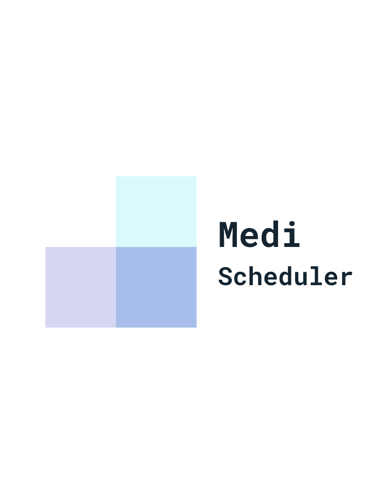

<ion-content [fullscreen]="true" class="custom-background">
  <ion-list class="ion-margin ion-text-center" >
    
    <ion-button class="login-button" routerLink="user-login">Get Started!</ion-button>
  </ion-list>

</ion-content>


